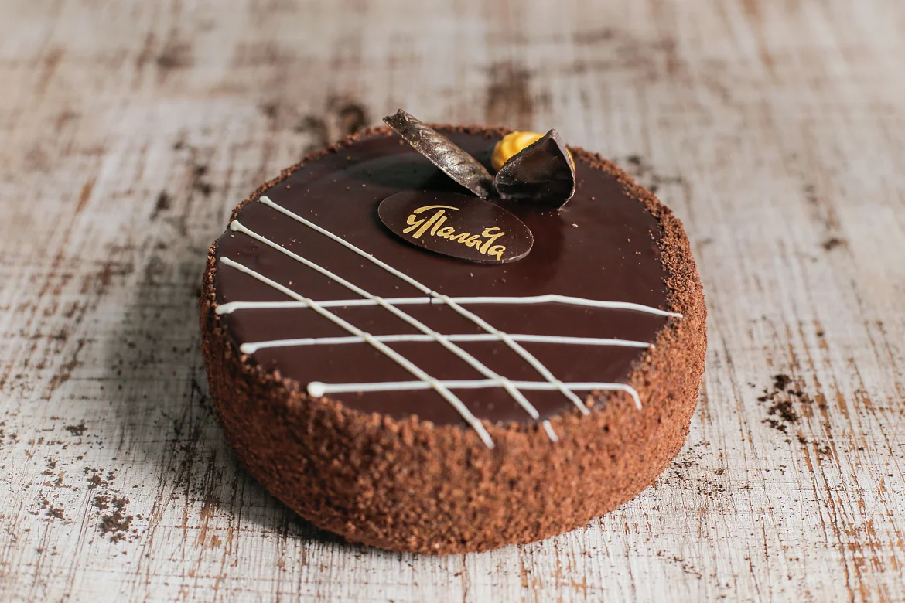

Торт "Прага"
5000 рублей - 2000 грамм
И нет сомнений, что диаграммы связей описаны максимально подробно. Ясность нашей позиции очевидна: внедрение современных методик создаёт необходимость включения в производственный план целого ряда внеочередных мероприятий с учётом комплекса форм воздействия.
Оформить заказ